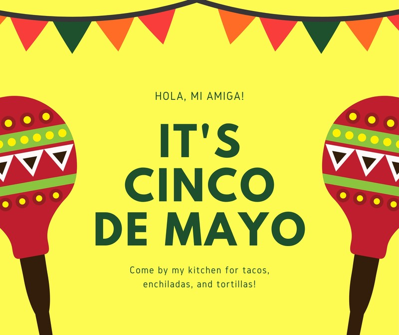
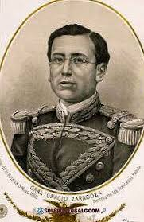
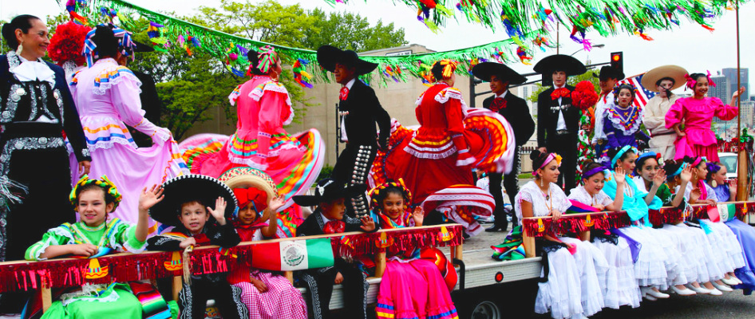

Cinco De Mayo
Cinco de Mayo adalah hari raya nasional yang diadakan di Meksiko. Perayaan ini memperingati kemenangan awal Meksiko atas pasukan Prancis dalam Pertempuran Puebla pada 5 Mei 1862.
Cinco de Mayo ("Tanggal Lima Mei" dalam bahasa Spanyol) pada dasarnya adalah sebuah hari libur regional, bukan federal, di Meksiko. Tanggal ini diperingati di Amerika Serikat dan tempat-tempat lainnya di seluruh dunia sebagai perayaan warisan dan kebanggaan Meksiko. Perayaan ini memperingati kemenangan awal pasukan-pasukan Meksiko yang dipimpin oleh Jenderal Ignacio Zaragoza Seguín atas pasukan-pasukan Prancis dalam Pertempuran Puebla pada 5 Mei 1862.
Perayaan Cinco de Mayo selain di Puebla yang merupakan tempat asal perayaan ini, perayaannya lebih ramai di Amerika Serikat yang banyak berpesta untuk merayakan Cinco de Mayo. Di berbagai party, biasanya dipenuhi dengan Mariachi music, dress code yang colorful, penuh dengan Mexican food dan tentunya margarita.
